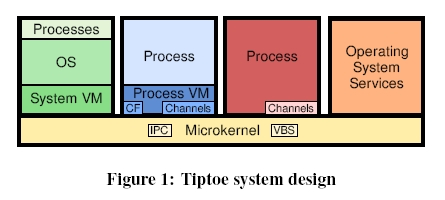

Figure 1 shows the Tiptoe system design. On the lowest level, there is a microkernel, which contains the VBS scheduler and an IPC mechanism. On top of the microkernel, processes using the channel subsystem, and operating system services, e.g., device drivers, may run along with operating system instances encapsulated in system VMs, and process VMs, which may take advantage of CF and the channel subsystem. Scheduling parameters for the VBS scheduler are set via system calls. Tiptoe is currently a small-footprint, bare-metal, real-time VEE which runs on an XScale 400MHz-processor with 64MB RAM. Tiptoe comes with its own C library, device drivers for setting I/O pins, an Ethernet driver, a serial driver, a microsecond timer framework, and a 1KHz timer interrupt to keep the system synchronized with real time. Furthermore, we have implemented a VM that virtualizes an Atmega128 processor with 4KB RAM and 128KB Flash storage, and interprets arbitrary AVR assembler code. Tiptoe can run basic real-time processes and multiple, virtual Atmega128 instances.
Contact: Harald Röck